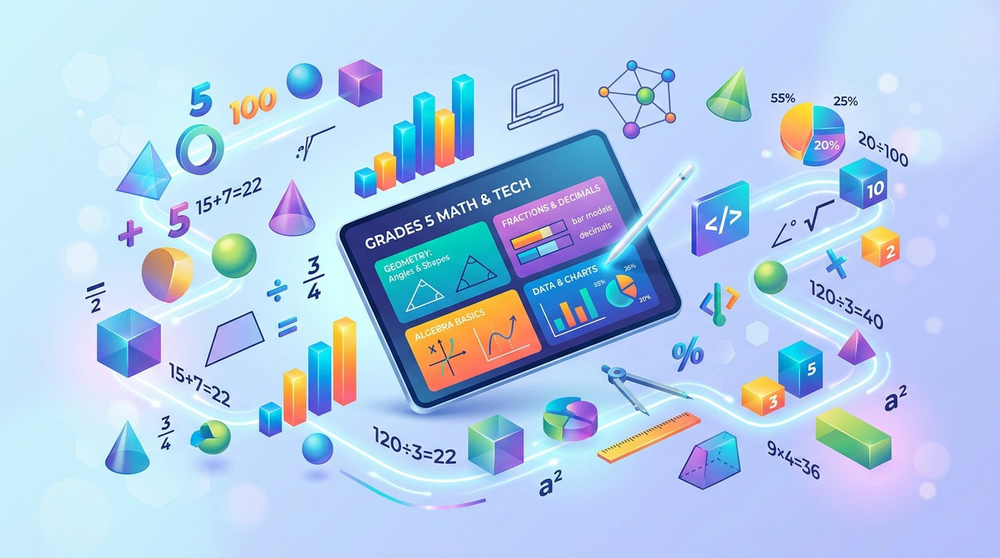
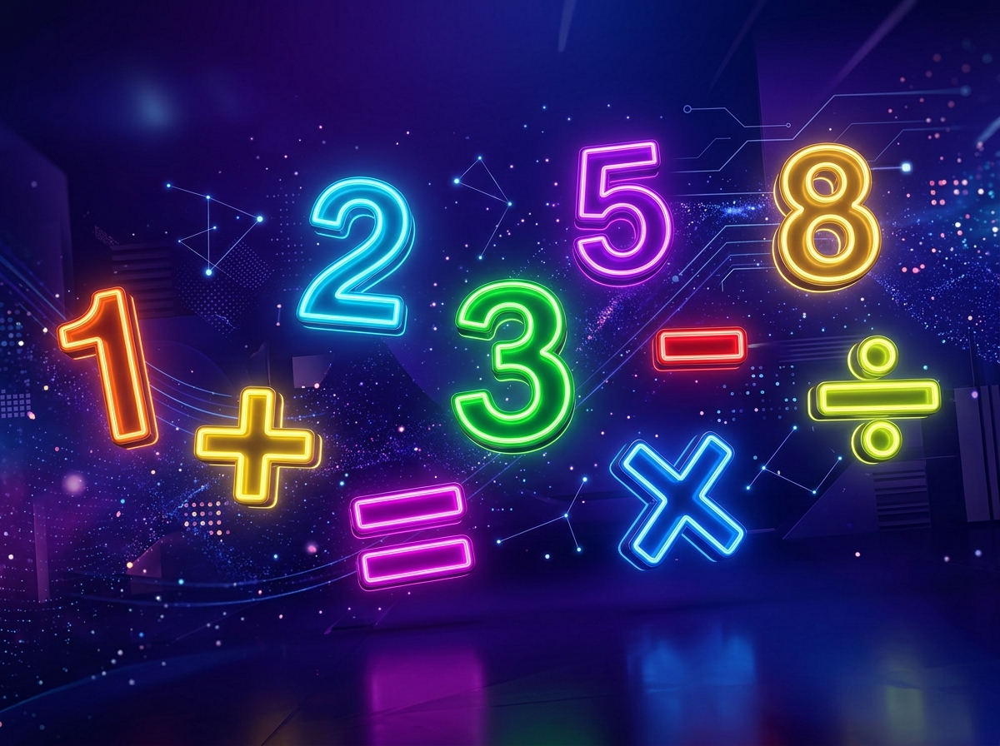
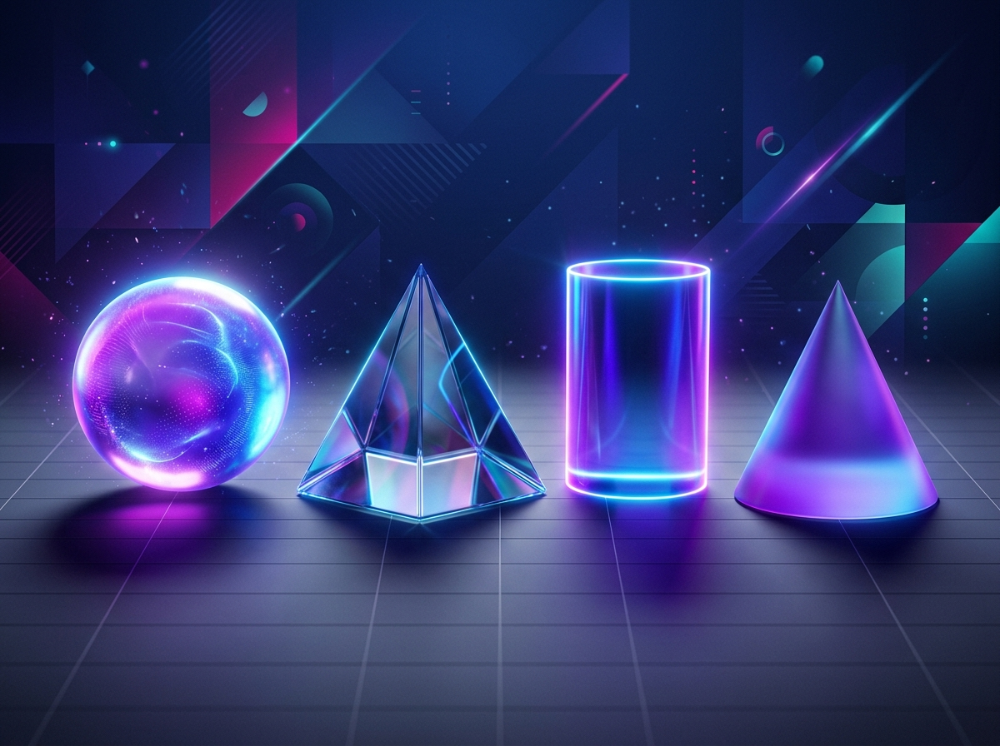
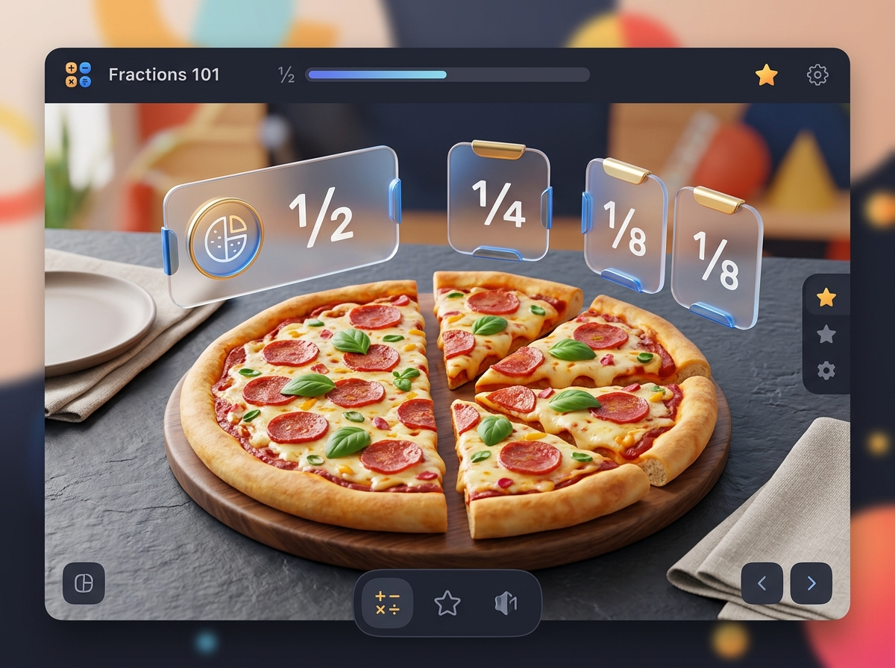
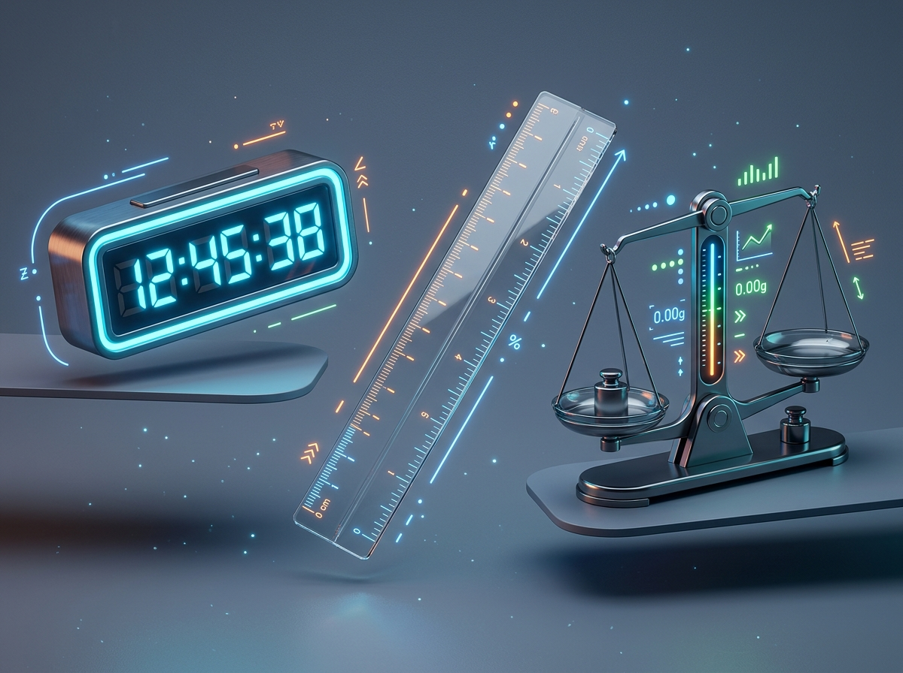

Matemática
Divertida
Aprende matemáticas de quinto grado mediante juegos, retos y actividades interactivas diseñadas especialmente para ti.

Temas disponibles
Actividades interactivas
Juegos educativos
Temas y Actividades
Explora los temas clave del plan de estudios del MEP para Quinto Grado y pon a prueba tus conocimientos en nuestros minijuegos interactivos.
Números Naturales y Operaciones
Domina las operaciones combinadas, prioridades de cálculo y orden de resolución de operaciones.
Multiplicación y División
Agiliza tu mente estimando productos y resolviendo divisiones rápidas en escenarios lúdicos.
Fracciones
Diferencia entre fracciones propias, impropias y mixtas. Aprende a sumarlas y restarlas con facilidad.
Geometría
Explora el mundo de los ángulos (agudos, rectos, obtusos), la simetría y la clasificación de triángulos.
Medidas
Aprende a realizar conversiones fluidas de longitud, masa, capacidad y tiempo.
Resolución de Problemas
Aplica tus destrezas matemáticas para resolver retos de la vida real analizando enunciados paso a paso.
Patrones y Relaciones
Descubre las reglas secretas en las sucesiones numéricas y completa las secuencias lógicas.
Estadística Básica
Interpreta gráficos de barras o líneas y determina la moda y el promedio de encuestas escolares.
Bitácora del Desarrollo
Acompaña la historia de diseño, planificación y programación de esta plataforma educativa a través de un recorrido de 14 semanas.
Investigación de Requisitos
Análisis de los programas oficiales del MEP de Costa Rica para Matemáticas de 5.° Grado y selección de los temas centrales.
Planificación del Proyecto
Definición de los minijuegos didácticos para cada tema y estructuración del cronograma tecnológico.
Diseño de la Interfaz
Creación de la guía de estilo, selección de tipografías (Poppins/Inter) y definición de la paleta de colores premium.
Organización del Contenido
Estructuración pedagógica de las explicaciones matemáticas y selección de ejemplos para quinto grado.
Desarrollo Base (Front-End)
Creación del marcado semántico HTML5 y la arquitectura de CSS modular.
Mejoras Visuales y Efectos
Configuración de variables CSS, gradientes, bordes redondeados y efectos hover sofisticados.
Sistema de Progreso Local
Programación en JavaScript del panel de estadísticas y persistencia mediante localStorage.
Desarrollo de Actividades 1 a 4
Construcción de los minijuegos interactivos de Operaciones Combinadas, Cálculo Mental, Fracciones y Geometría.
Desarrollo de Actividades 5 a 8
Desarrollo de los minijuegos de Medidas, Problemas cotidianos, Sucesiones y Gráficos Estadísticos.
Integración de Recursos Multimedia
Inserción de videos instructivos didácticos externos y creación de recursos en la biblioteca digital.
Optimización y Animaciones
Implementación del efecto de confeti, Scroll Reveal, contadores de carga numéricos y transiciones fluidas.
Corrección de Errores
Auditoría de bugs en juegos interactivas, detección de problemas lógicos de puntajes e insignias.
Pruebas en Dispositivos Móviles
Ajustes finales de adaptabilidad responsiva y controles táctiles para teléfonos y tabletas.
Ajustes Finales
Verificación final de diseño y preparación del lanzamiento de la plataforma educativa.
Galería del Proyecto
Explora el entorno visual, las medallas de logro y los materiales didácticos creados para esta plataforma.




Acerca del Proyecto
Matemática Divertida es una plataforma de aprendizaje innovadora diseñada específicamente para estudiantes de quinto grado de la educación general costarricense. Su desarrollo está alineado estrechamente con el plan de estudios oficial del Ministerio de Educación Pública (MEP).
Esta plataforma fue diseñada para fortalecer el aprendizaje de las Matemáticas de Quinto Grado mediante actividades lúdicas, recursos multimedia y experiencias interactivas. A través de la gamificación —ganando puntos y coleccionando medallas virtuales— fomentamos una mentalidad de crecimiento, eliminando la frustración y convirtiendo la matemática en una aventura interactiva para realizar en la escuela o el hogar.
Currículo del MEP
Temas 100% basados en los contenidos obligatorios del programa oficial de primaria costarricense.
Interactividad Táctil
Desarrollada para deslizar, arrastrar y presionar con fluidez en computadoras, iPads y smartphones (iOS y Android).
Gamificación del Progreso
Feedback positivo, insignias coleccionables y control total de logros sin estrés de calificación tradicional.